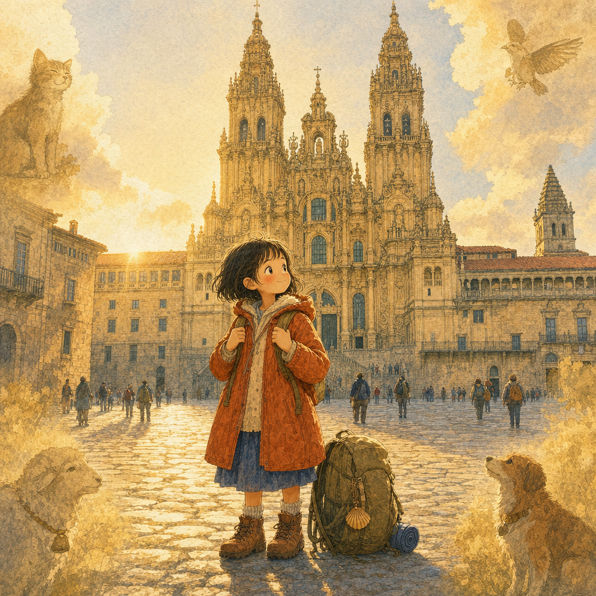

01
Porto｜出發那天
出發那天，我其實沒有什麼特別的感覺。只是背起包，走出 Porto。天空很亮，路在前面，我還不知道自己會被這條路帶去哪裡。

02
海邊之路｜魚、貝殼和風
葡萄牙的海邊很亮。有魚、貝殼、海風，還有一路出現的黃色箭頭。我一邊走，一邊被風吹著，心好像也慢慢被打開一點。

03
可愛小鎮｜路不是每天都回答
有些小鎮很可愛，窗戶、石板路、小動物都像故事裡的。可是路沒有因此變短。我還是要一步一步走，走到腳步慢慢有了自己的節奏。

04
Galicia｜女巫小鎮
進到 Galicia 以後，路的感覺變了。石頭小鎮裡有貓、有草藥，還有騎著掃帚的小女巫。她不可怕，只是很早就學會了聽風。

05
Oia｜海邊修道院
Oia 的修道院站在海邊，像也陪著海走了很久。我在那裡停下來，聽浪的聲音。那時我第一次覺得，安靜不是空的。

06
想放棄的一天
有一天，天氣熱得像要把路面曬融化。我走不下去，眼淚自己跑了出來。不是迷路，也不是太孤單，只是那一刻，我真的很想放棄。

07
Baiona｜La Pinta 的船
在 Baiona，船停在港口。很久以前，有人從海上帶回新的世界。我看著那艘船，忽然想，也許每一條路都會帶回一個新的自己。

08
山水和動物的短暫陪伴
路上有時候會遇見動物。牠們不會陪我走完全程，只是短短出現一下。可是那一下也很好，像是在說：這一小段，我在。

09
Pontevedra｜心裡的路
走著走著，外面的石板路，好像也走進心裡。我開始聽見一些很小的聲音。那些聲音以前不一定聽得見，可是它們更安靜，也更真實。

10
慢慢放下
有些東西，不是用力想就會明白。是走著走著，身體先鬆了，心才慢慢鬆開。我沒有突然變得很勇敢，只是開始沒有那麼用力抓住所有事情。

11
最後一段路｜相信自己
最後一段路，我還是會累，也還是會怕。可是我開始相信自己。不是相信自己永遠不會倒下，而是相信，就算很慢，我也可以一步一步走到終點。

12
Santiago｜抵達不是結束
我抵達了 Santiago 的大教堂。原本以為路會在這裡結束。可是站在那裡的時候，我才明白，路只是安靜地告訴我：妳已經不一樣了。